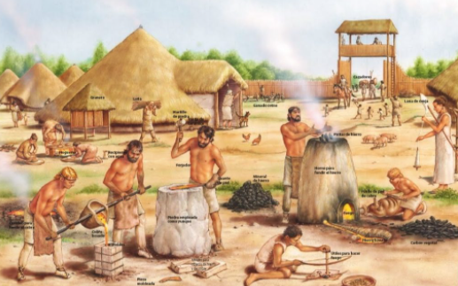

La fundición de metales es una tecnología prehistórica, pero que aparece recientemente en los registros de la arqueología. Nació cuando los antiguos usaron las tecnologías del fuego, llamadas piro tecnologías las cuales proveyeron las bases del desarrollo de la fundición.
Incluso el manejo de los metales fundidos ha definido épocas en nuestra historia, como la era de Bronce y la era de Hierro,
La Edad del Hierro es el período en el cual se descubre y populariza el uso del hierro como material para fabricar armas y herramientas y ocurre alrededor de 500 al 332 ac.
La Edad del Bronce es el período de la prehistoria en el que se desarrolló la metalurgia de este metal, resultado de la aleación de cobre con estaño y ocurre del 3000 al 1200 ac.